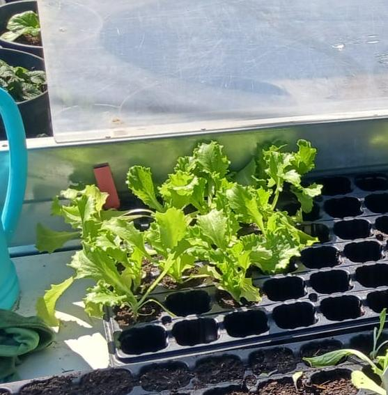
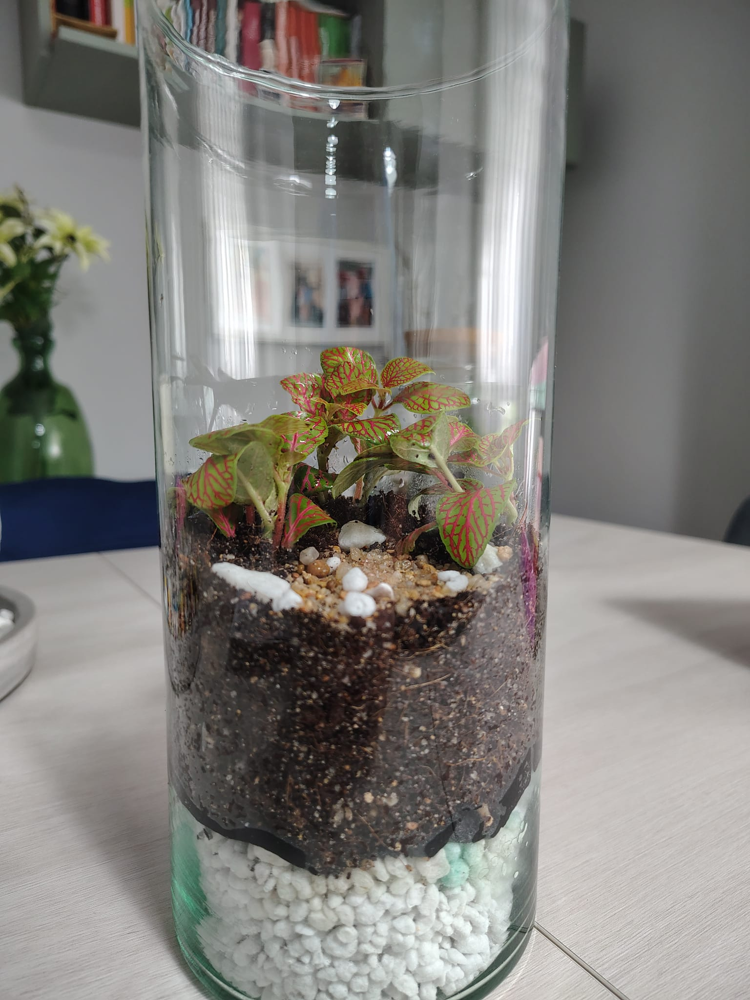

Terrarios & Urnas
Comparativas directas y análisis de la urna que uso. Qué cristal merece tu dinero según el uso real que le vas a dar.
Explorar →Explora el contenido
Comparativas directas y análisis de la urna que uso. Qué cristal merece tu dinero según el uso real que le vas a dar.
Explorar →Chihiros vs Twinstar y el análisis técnico de la luz que uso. Espectro, PAR y horas de luz explicados.
Explorar →Aprende a preparar la mezcla casera 50-30-20. Capas, drenaje, colémbolos y el secreto para que la tierra dure años sin pudrirse.
Leer artículo → Top 5
Top 5
Mi lista personal de especies resistentes y vistosas. Cuáles son ideales para un ecosistema cerrado y cuáles prefieren una maceta en el salón.
Análisis recientes
 Paso a paso
Paso a paso
Guía para aficionados con fotos reales: qué plantas usar, cómo hacer el drenaje y trucos para un mantenimiento casi nulo.

Huerto en casaGuía paso a paso para germinar semillas en casa. Mi experiencia, lo que ha funcionado genial y los errores de novato que no volveré a cometer.
Probé ambos durante dos meses en condiciones reales. Hay una diferencia que no aparece en las fichas técnicas.

Sobre el autor
No me tomo lo de los terrarios como un profesional súper técnico, sino como alguien que simplemente quiere decorar su casa creando pequeños ecosistemas llenos de vida, de esos que son eternos y requieren muy poco mantenimiento.
También me he enganchado a montar mi propio minihuerto, así que aquí comparto mis aventuras plantando lechugas, tagetes y capuchinas sin salir del salón. Todo 100% real, basado en mi propia experiencia, con mucho ensayo y error.
Leer mis artículosEste sitio participa en el Programa de Afiliados de Amazon EU. Si compras a través de mis enlaces, recibo una pequeña comisión sin coste adicional para ti.
Sin frecuencia forzada. Solo cuando hay algo que merece la pena leer sobre equipamiento real.
Sin spam. Puedes darte de baja en cualquier momento.